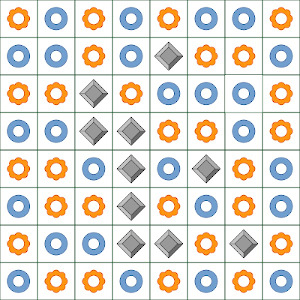

Submit on Mooshak Weekly Problems #07
This problem is from MIUP'2016.
After a life of hard work, Joan managed to save just enough to retire and buy the house of her dreams. She loves flowers, so of course it has a large garden and she plans to fill it with Forget-Me-Nots – her favourite flowers in the world.
When she bought the house, the garden was packed with big rocks. She planned on removing them as soon as possible but when she tried to, she found out they were buried too deep and could not move them. She decided to embrace them and just create a zen garden by planting the flowers around them in a checkered pattern.
Forget-Me-Nots need lots of water, so she wants to have two sprinklers next to each flower. What is the maximum amount of flowers she can plant?
Given a rectangular garden divided into equal squares, where some squares are occupied by unmovable rocks, calculate the maximum amount of flowers that can be planted knowing that each flower must have at least two sprinklers next to it (i.e. in an adjacent square – horizontally or vertically). Sprinklers and flowers need to be placed in their own square and cannot be placed in squares occupied by a rock. However, one sprinkler can be shared by several flowers.
The following figure depicts a valid configuration of flowers and sprinklers for the garden of sample 2. Flowers are drawn in orange, sprinklers in blue and rocks in dark grey.

The first line of the input will contain two numbers, \(L\) and \(C\), that represent the number of lines and columns of the garden in squared cells. The next \(L\) lines will each contain \(C\) characters. If the character is a ’.’ it represents an empty garden cell. If it is a ’#’ it represents a rock occupied cell.
A line with a single number representing the maximum amount of flowers that can be planted.
| \( 1 \leq L \leq 9 \) | Length of garden |
| \( 1 \leq C \leq 9 \) | Width of garden |
| Example Input 1 | Example Output 1 |
|---|---|
3 3 ... ... ... | 5 |
| Example Input 2 | Example Output 2 |
|---|---|
8 8 ........ ....#... ..#..... ..##.... ...#.#.. ...#.... ...##.#. ........ | 28 |
Content by Pedro Ribeiro (DCC/FCUP), migrated from www.dcc.fc.up.pt/~pribeiro/aulas/pc2627/problems/pc036.html to demonstrate the UC Design Kit.